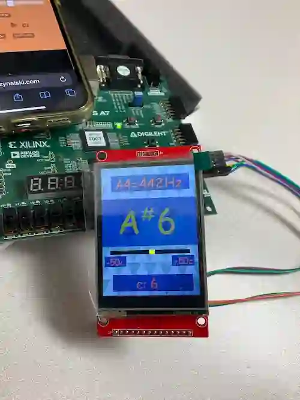

Final project for undergrad class ECE 153A at UCSB about real-time systems and FPGA. This project used Xilinx FPGA and programmed with C to make a chromatic tuner. It can detect note pitches and display it on the screen.
FPGA chromatic tuner
Published Dec 12, 2024 • Updated Aug 10, 2025
